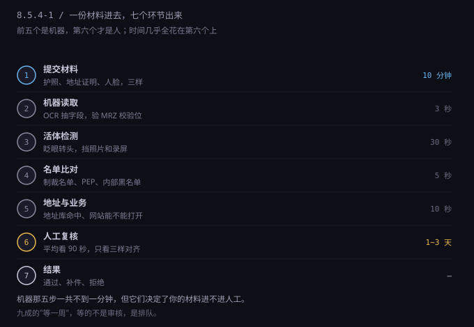
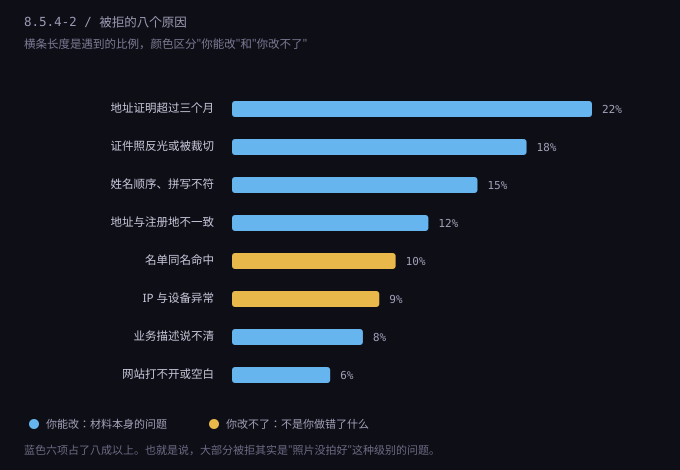
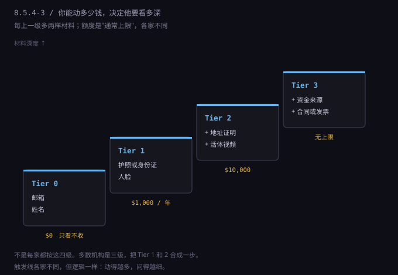

约 0.42 万字 · 3 张图 · 三样材料，七道环节，四个对齐
KYC 是 Know Your Customer 的缩写，中文一般叫“了解你的客户”。 它不是某家公司的规定，是反洗钱（AML）法规压在金融机构头上的义务： 你开户，它必须能回答三个问题，答不上来就是它的责任。
三个问题，对应三样材料：
| 问题 | 要什么 | 它在防什么 |
|---|---|---|
| 你是谁 | 护照或身份证 + 人脸 | 冒用别人身份开户 |
| 你住哪 | 三个月内的地址证明 | 账户挂在查不到的地方 |
| 你做什么 | 业务描述 + 网站 + 资金来源 | 账户被拿去洗钱或收黑钱 |
这三样是全套 KYC 的地基。后面所有加码——视频面签、资金来源、股东穿透——都是在这三样上加深度，不是换方向。
有个误解要先拆掉：很多人以为 KYC 在判断“你是不是好人”。它不判断。 它判断的是“你是不是一个可以被追责的人”。一个能收到法院传票、能被冻结资产、能被找到的实体，对机构来说就是合格客户； 一个查不到地址、说不清业务、网站打不开的账户，哪怕你一分钱坏事都没干，也是风险。
这个视角一换，很多事就通了：为什么它非要一个能收信的地址？因为它要能给你寄东西，包括法院文件。 为什么它非要你说清业务？因为出事了它得能解释“这个账户当时是干什么用的”。
材料清单本身很短，坑全在格式上。下面这六条，是实际提交时最常被打回来的。
第一，护照要整页，四角都在。很多人为了显得清楚，把护照裁成只剩资料页中间那块。 机器读的是页面下方的两行 MRZ（机读区），裁掉就没有校验位了，直接判为“无法验证”。 正确做法：平放、正面光、整页入框、不反光。
第二，不要用扫描件套滤镜。手机拍的比扫描仪扫的更受欢迎，因为手机照片带 EXIF 元数据（拍摄设备、时间），伪造难度更高。 扫描件本身不违法，但被压过、锐化过、去过背景的图，会让 OCR 出错。
第三，地址证明要三个月内的。不是“最近开的”，是“文件上的日期在三个月内”。 银行对账单、水电燃气单、税务通知都行；手机话费单很多机构不收（因为地址可以随便改）；快递单更不行。
第四，地址证明上必须有你的名字和完整地址。缺一个就不算。 有些人拿租房合同，合同上有地址有名字，但没有第三方出具——多数机构不认，因为它可以自己打印。
第五，不能是截图。PDF 原件、纸质文件的照片都可以；从网银里截的图不行，因为它没有文件结构，一看就是截的。
第六，人脸别打扮。不戴帽子、不戴墨镜、不逆光、背景不要有别人。 活体检测会要求你眨眼或转头，动作做不出来（光线太暗、脸被头发挡住）会被判失败，失败三次可能锁 24 小时。
提前把三样东西放在同一个文件夹里，命名成 passport.jpg、address-2026-10.pdf、selfie.jpg。
听起来很傻，但你会需要在十几个平台反复上传同一批文件，找文件的时间比上传的时间长。
更重要的是：每次上传的都必须是同一份，不能这次用 9 月的账单、下次用 11 月的。后面第八部分讲为什么。
材料交上去，先过的不是人，是五道自动检查。这五步加起来不到一分钟，但决定了你的材料进不进人工。

逐步说清楚每步在查什么，你就知道为什么某些“小事”会被打回来。
机器读取（OCR）。它从图里抽出字段：姓名、证件号、出生日期、有效期、签发国。 护照下方那两行 MRZ 里带校验位——一种按固定规则算出来的数字，用来验证前面字符有没有被改过或读错。 校验位对不上，不是“人工再看看”，是直接判失败。这就是为什么裁边、反光、模糊这么致命。
活体检测。早期是“眨眨眼”，现在多数是“转头 + 读四个数字”。 它要区分三样东西：真人、照片、屏幕。照片没有立体阴影；屏幕有摩尔纹和刷新条纹； 录屏动作太流畅、没有微表情。这三种都会被识别出来。
名单比对。你的名字会去撞几份名单：OFAC SDN（美国财政部制裁名单）、联合国安理会名单、欧盟名单， 以及各家机构自己的黑名单和历史欺诈记录。撞上不代表你有问题——同名就会撞。 中国常见姓名的重名率极高，这是国内用户被卡在人工审核的最主要原因之一。
地址与业务校验。地址会被送去标准化：街道缩写对不对、邮编和城市配不配、这个地址是不是商业地址或虚拟办公室。 业务这边看两件事：网站能不能打开、域名注册多久了。刚注册三天的域名是一个明确的风险信号，因为它符合“临时搭个站骗过审核”的特征。
五步全过，材料进队列等人。任何一步不过，你要么收到“请重新上传”，要么收到一封不解释原因的拒绝信——后者最难受，因为你不知道该改什么。
轮到你的时候，审核员面对的是一个队列。他平均在你身上花九十秒，看三样：
九十秒能做的判断很有限，所以他的策略是找不一致。一致就过，有一处对不上就退回让你补。 这意味着你的目标不是“证明我很可信”，而是“别让他发现任何一处矛盾”。
这也解释了一个常见困惑：为什么有人材料很糙却过了，有人材料很全却被拒。 因为审核员看的不是材料的“质量”，是材料之间的自洽程度。 一份普通的租房账单 + 一个能打开的网站 + 一句说得清的业务，比一份精美但地址和注册地对不上的材料更容易过。

八个原因，逐个说怎么改：
| 原因 | 怎么改 |
|---|---|
| 地址证明超过三个月 | 去银行 App 下一份最新的对账单，别用抽屉里那份 |
| 证件照反光或被裁切 | 白天靠窗、正面光、整页入框；关掉手机的“文档增强” |
| 姓名顺序、拼写不符 | 护照是姓在前，表单是名在前，看清楚再填；别加中间名 |
| 地址与注册地不一致 | 公司注册地、银行地址、网站联系地址写成同一套 |
| 名单同名命中 | 改不了，只能配合人工：主动提供出生日期、护照号，必要时视频 |
| IP 与设备异常 | 固定一个出口、固定一台设备；别每次登录都换环境 |
| 业务描述说不清 | 准备一句话：卖什么、卖给谁、怎么收钱 |
| 网站打不开或空白 | 正式提交前用手机流量打开一次，确认没被墙、没有登录墙 |
最需要单独说的一句：“名单同名命中”不是你的错，但你得主动。 它不会自动澄清，只会卡在那里。做法是：在被要求补件时，除了常规材料，额外写一句说明——出生日期、出生地、护照号， 并明确说“我与名单上的人不是同一人，以下是我的身份信息”。这句话会让审核员从“可疑”切到“误报”，效率差别很大。
还有一条常被忽略的：IP 与设备异常。 它不算身份问题，但在风控模型里权重很高。同一个账号，今天从美国登录、明天从新加坡登录，还换了浏览器， 系统会先锁再问。这就是上一节讲“环境要成套”的原因——它不是洁癖，是降低被锁的概率。
KYC 不是一次做完就完事的。它分级别，级别由你能动的钱决定。

四级大致是这样：
为什么要分级？因为合规成本要和风险匹配。给一个只收几百美元的人做视频面签，不划算； 让一个年流水几十万的人只交个护照，风险太大。分级是最省事的折中。
对你来说，这个分级有两个实际用处：
第一，先看自己在哪一级。很多人一开始就想做到 Tier 3，去准备资金来源证明，结果发现根本用不上—— 你还没到那个额度。反过来，也有人一直在 Tier 1 用，突然一笔大额进来，账户被冻结，才发现自己早该升级。
第二，升级要趁早，不要等触发。触发时的审核是“带怀疑的审核”，比主动升级严得多。 你主动提交材料，是“我想合规”；被触发后提交，是“你在解释这笔钱”。 同样一份合同，前者是加分项，后者是被审查的对象。
把所有失败原因收拢，会发现只需要保证四件事对齐。这四条做到了，八成的问题不会发生。
第一，姓名的拼写和顺序。护照上是 ZHANG WEI，姓在前。
表单如果分 First name / Last name，First 填 WEI，Last 填 ZHANG。
填反了机器判定“与证件不符”，人工看到也会退回。
另一个坑：有些表单只有一个 Full name 栏，那就严格按护照顺序写 ZHANG WEI，别自作聪明改成西式顺序。
第二，地址的写法和语言。中文地址翻成英文，顺序是反的：
“河南省开封市顺河区XX路1号”写成 1 XX Road, Shunhe District, Kaifeng, Henan 475000, China。
从小到大，最后是国家。邮编要单列，不要塞进街道里。
同一个地址在不同表单上写法不一致（少了 District、邮编加了 CN- 前缀、用了拼音和英文混写），就会触发“地址不一致”。
第三，时间。地址证明的日期必须在三个月内，而且你提交给 A 家的那份和提交给 B 家的那份最好是同一份。 如果你 9 月给银行交了 8 月的账单，11 月给支付机构交了 10 月的账单，两份都在有效期内，没问题； 但如果 11 月交的那份地址和 9 月那份写法不同，风控会标记“地址变更”，触发复审。
第四，业务描述。准备一句话，中英文各一个版本，任何平台都用同一句：
We sell digital study guides for computer science students
through our website, paid by card and settled monthly.
这句话里包含了四个信息：卖什么（digital study guides）、卖给谁（CS students）、怎么卖（through our website）、怎么收钱（card, monthly settlement）。 审核员要的就是这四样。含糊的写法比如 “online business”、“e-commerce”、“software services”，等于什么都没说。
最后一件必须做的事：把每一次提交都留一份存档。
存什么：提交的文件原件、提交日期、提交给了谁、当时的业务描述。用一个表格记，一行一次。
为什么重要：KYC 会复审。复审的逻辑是“和上次比有没有变化”。 你如果记不清上次交的是哪份账单、写的是哪句业务描述，就容易出现“这次和上次不一致”，而这在风控里是红旗——它意味着有人在改信息。 有存档，你就能原样再交一遍，复审十分钟过。
| 日期 | 提交给谁 | 文件 | 业务描述 |
|---|---|---|---|
| 2026-09-12 | Mercury | passport.jpg / address-2026-08.pdf | digital study guides |
| 2026-10-03 | Stripe | passport.jpg / address-2026-08.pdf | digital study guides |
| 2027-03-20 | Mercury（复审） | passport.jpg / address-2027-02.pdf | digital study guides |
三行记录，能省掉后面无数封来回的邮件。
最后，有一条线要说清楚，因为它和“技巧”只隔一层纸：不要改图，不要借别人的账单，不要编地址。
这不是道德说教，是技术现实。改过的 PDF 会留下生成器信息、字体子集、修改时间； 手机拍的照片有 EXIF，P 过的图元数据对不上；借来的账单即使地址一样，姓名也对不上，而姓名是第一个被机器校验的字段。 专业审核看这些只需要几秒。
更重要的是后果的量级。被拒只是这一次没过，可以换一家；被标记为欺诈（fraud flag）是另一回事—— 这类标记会在机构之间共享，你换一家、换一个产品、甚至换一年后再来，都还在。 而且它绑的是你的身份，不是那个账号。这意味着你以后用同一个护照开任何账户，都会先撞上这道标记。
一次照片拍糊了，损失是两天；一次欺诈标记，损失是这条路。